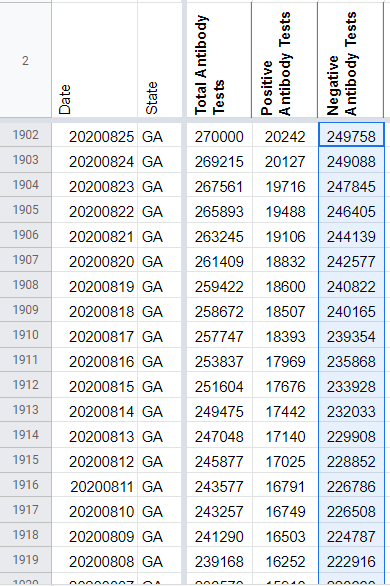
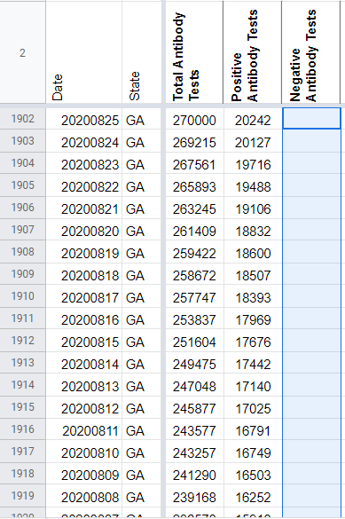

[GA] Deleting calculated negative serology values
Issue number 791
the-daniel-lin opened this issue on August 26, 2020 at 7:56 am
Labels Data quality Historical Data
State or US: Georgia
Describe the problem On 6/7, CTP began calculating negative serology results. We are deleting this calculation.
the-daniel-lin added the label Data quality on August 26, 2020 at 7:56 am
the-daniel-lin added the label Historical Data on August 26, 2020 at 7:56 am
the-daniel-lin closed the issue on August 26, 2020 at 8:03 am
BEFORE:

AFTER:

Values deleted: 249758 249088 247845 246405 244139 242577 240822 240165 239354 235868 233928 232033 229908 228852 226786 226508 224787 222916 220660 218459 216414 214477 214348 212535 210412 208075 205981 203937 203216 202784 200340 198530 196050 192963 191418 191212 190956 188675 186101 183223 181191 177492 176597 176430 173727 171096 168075 165798 162826 162044 161854 161467 159209 155695 152838 149415 149076 148846 145700 143853 140811 138045 135244 134772 134569 132677 130180 126461 114169 111514 111178 111016 108958 106774 104321 101813 99259 98953 98810 96554